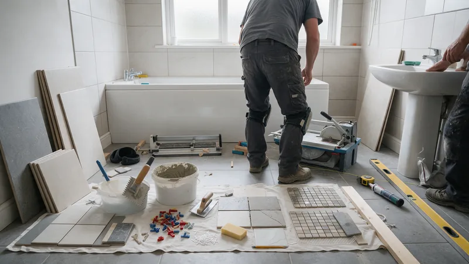

Home / Services / Bathroom wall and floor tiling
Bathroom wall and floor tiling
Bathroom wall and floor tiling.
Walls and floors, stripped back, made flat, waterproofed where it matters and set out from the centre so the cuts land where nobody looks. The tile is the last thing that happens and the first thing anybody notices.
What actually goes wrong in bathrooms
In the ten years we have been looking at other people's tiling, almost every failed bathroom fails for one of four reasons, and none of them is the tile. The wall was not flat enough for the size of tile that went on it. The shower was never waterproofed behind the tile, so the grout was doing a job grout cannot do. The internal corners were grouted instead of sealed, so they cracked within a year and let water straight in. Or the tiles went on five dabs of adhesive each instead of a full bed, leaving voids behind them that fill with water.
All four are decided before anybody opens a box of tiles. That is why the preparation is most of the quote and most of the week, and why a quote that is all tile and no preparation is usually the cheapest one on the table.
What we do about each of them
A straightedge goes on every wall and the floor before we quote, so we know what levelling is needed and we can tell you then rather than on the Wednesday. In a shower or any wet area, a proper waterproof layer goes on behind the tile with every corner and joint taped, and it goes on whatever is behind it, including a wall that looks fine. Every internal corner and every junction with a bath or a tray gets a flexible sealant bead rather than grout. And every tile is pressed into a combed bed and checked, which is slower and is the only way to know there is nothing behind it.
Floors are a different job to walls
A wall holds still. A floor gets walked on, and whatever is underneath it moves. Timber floors flex, old boards cup, and a floor with any bounce in it will crack a tile or a grout line no matter how good the adhesive is. So the floor gets checked first, boarded or levelled where it needs it, and a decoupling membrane goes down on anything timber, anything heated or anything that has moved before. On stone or over heating that membrane is not optional.
The other thing with floors is the threshold. Where the tile meets carpet, timber or the hall, somebody has to decide what the edge does, and it is much easier to decide that before the floor goes down than to improvise it on the last afternoon.

Generated photoGenerated for this demo. Not a photograph of a real job.
 Generated photo
Generated photoThe layer nobody sees and the one that decides whether the wall behind is still sound in ten years.
The set out
Where the cuts are going to land.
The same wall twice, with the only difference being where the tiler started. Twenty minutes with a tape before anything is mixed, and it is the one decision on a tiled wall that cannot be put right afterwards.
First full tile against the corner
Quickest way to start and the most common. The trouble is that a wall is never a whole number of tiles wide, so whatever is left over all lands at the far end in one piece. Here that is a sliver. Something that thin chips as you cut it, will not hold grout properly, and it lands at the doorway, which is the corner people walk past and look straight down.
Centre line struck first, cuts shared
Same wall, same tile, same number of tiles. The leftover is halved and a cut of over half a tile lands at each end instead. That cuts clean, grouts properly and reads as deliberate from anywhere in the room. It costs twenty minutes with a tape and a pencil before anything is mixed, and it is the single decision on a tiled wall that cannot be put right afterwards.
Drawn in the browser rather than photographed. Both walls are the same width and carry the same number of tiles, and the sliver is drawn wider than it would really be so it shows up at all.
In section
Tiling over what is already there.
A wall seen from the side, layer by layer. The question is never whether new tile will stick to old tile. It is whether the old tile is still stuck to the wall, and what the extra thickness does to everything round it.
Left to right: wall · bed · old tile · bed · new tile
Solid underneath, and the step out is liveable
Every tile on the wall sounds solid when you tap it, the old grout is sound, nothing is loose and the surface is flat. Then the old tile is a perfectly good background: keyed, primed and tiled onto. What you have to look at is the dashed line. The finished wall now stands about eighteen to twenty five millimetres further into the room, and that has to work at the door frame, the window reveal, the sockets, the bath edge and anywhere a trim has to die into something.
The old tile is sat on nothing across half its back
Hollow, and it is only holding on at the top
Tap along the wall with a knuckle or the handle of a screwdriver. Solid gives you a dull knock. Hollow gives you a drum, and a drum means the bed behind has let go. Tile onto that and you have doubled the weight hanging off a bond that already failed once. It comes off, usually in winter, usually in one sheet. The same goes for anything cracked, anything springy, any wall that has been wet and any tile that is already lifting at a corner.
Drawn in the browser rather than photographed. The thicknesses are exaggerated so the step out shows up at all.
On the job
How this one usually goes.
- The look, before anything elseWhat is coming off, what is underneath, where the water goes, how the room is ventilated, and a straightedge on every surface. Twenty minutes to half an hour and it is what the quote is built from.
- Strip outOld tile off, old adhesive knocked back to the wall, everything bagged and out. The dustiest hour of the job, so the doorway is sealed and the floor and landing are sheeted before it starts.
- The honest conversationAnything we find once the tile is off gets said straight away, with what it adds, before we carry on. Soft plasterboard behind a shower and a floor that bounces are the two usual ones.
- Prepare and waterproofWalls made flat, boards replaced where they have gone, everything primed. In the shower and any wet area, a waterproof layer with every corner and joint taped.
- Set outCentre lines struck, course heights worked out, the cuts put where the room looks at them least and a batten screwed on to work up from.
- TileAdhesive combed out, full bed behind every tile, levelling clips in. Cutting outside wherever the weather allows and the floor vacuumed at the end of every day.
- Grout, seal and leave aloneJoints filled and cleaned off, flexible sealant in every internal corner and every junction that moves, then a clear date for when the shower can be used.
A sample running order for this demo. Yours depends on the property and on what turns up when the old surface comes off.
Questions
Asked about this job.
Do the walls need boarding, or can you tile on plaster?
Plaster is fine outside wet areas as long as it is sound, dry and fully cured, which on new plaster means a couple of weeks at least and sometimes longer. It gets primed first, because dry plaster pulls the water out of the adhesive before it has a chance to go off.
In a shower or behind a bath it is a different answer. Plasterboard and plaster soften when they get damp, so a wet area gets boarded in a tile backer board or waterproofed properly over what is there. If somebody offers to tile a shower straight onto standard plasterboard with nothing behind it, that is the point to get another quote.
Can you do a wet room?
We will tile one, yes, and the tiling is the straightforward half. The half that matters is the fall in the floor towards the drain and the waterproofing underneath, and on a wet room that is not a detail, it is the whole thing.
What we would say plainly is that a wet room is less forgiving than a shower tray. A tray is a manufactured waterproof thing you tile up to. A wet room is a waterproof floor you have made on site. We will talk you through what is involved rather than taking the job and hoping.
How flat do the walls need to be?
It depends entirely on the tile. A small ceramic tile only spans a few inches, so it can follow a wall that is a bit out and nobody will ever know. A tile a metre long cannot: it bridges from one high spot to the next and every millimetre the wall is out turns into a lipped edge you can feel with your hand.
So the straightedge goes on before we quote, not after. If the wall needs skimming or levelling to take the tile you have picked, you will be told then. There is a drawing of exactly this on the large format page.
What about the floor, can you tile over the existing one?
Sometimes. Over an old tiled floor that is solid, flat and well stuck, often yes, with the same tap test and the same thickness question as a wall, plus a check that the door still opens over it.
Over vinyl or any cushioned floor covering, no. It has to come up along with the adhesive underneath it. Over timber boards, not directly: they move and they flex, so it is boarding or a membrane first. Over a floor that bounces when you walk across it, nothing goes on until the bounce is fixed.
Can you work round a bathroom fitter or a plumber?
That is how most full bathrooms go, and it works best when everybody knows the order. Normally it is first fix plumbing, then boarding and waterproofing, then floor tiling, then the suite, then the wall tiling finishes down to it, then sealant last of all.
What causes trouble is being asked to tile round a bath that is going to be swapped later, or sealing before the tray has had weight in it. We will say so rather than quietly doing it and leaving somebody else the problem.
General trade knowledge written for this demo, not advice on your property.
Our work
Sample jobs like this.
 Generated photoHalf way up the wallKendal · Sample
Generated photoHalf way up the wallKendal · Sample Generated photoA walk in, floor to ceilingWindermere · SampleGenerated photoWalls and floor in one goUlverston · Sample
Generated photoA walk in, floor to ceilingWindermere · SampleGenerated photoWalls and floor in one goUlverston · Sample Generated photoMosaic, following the fallKendal · Sample
Generated photoMosaic, following the fallKendal · SampleMade up samples with generated pictures. Tap one for the detail.
Also
The other things we do.
Kitchen splashbacks
The strip of wall between the worktop and the units, which is small, awkward, full of sockets and the one bit of tiling people stand two feet away from every day.
More →Large format and porcelain tiles
Big thin porcelain, two pairs of hands and a suction frame. The tile is the easy part. Getting the wall flat enough for it is the job.
More →Natural stone tiling
Slate, limestone, travertine and marble. Heavier, thirstier and more variable than porcelain, so it wants sealing, sorting and a floor that can carry it.
More →Regrouting and resealing
Old grout raked out and replaced, the internal corners taken back to bare and resealed. The cheapest job on this list and often the only one a bathroom needs.
More →Outdoor porcelain tiling
Patios and paths in outdoor grade porcelain, on a full mortar bed with a fall away from the house, because outside it is the water and the frost that decide how long it lasts.
More →Shall somebody come and look at it?
Tell us the room and your postcode. Twenty minutes with a straightedge tells us more than any photograph.